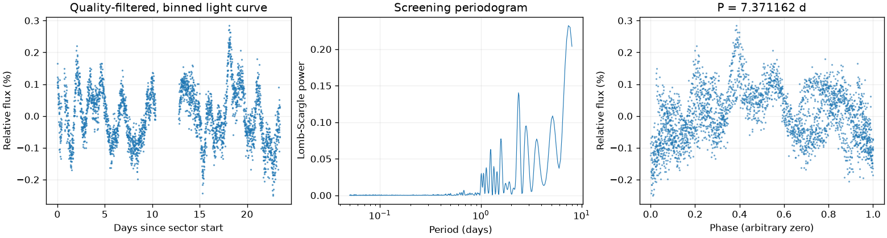
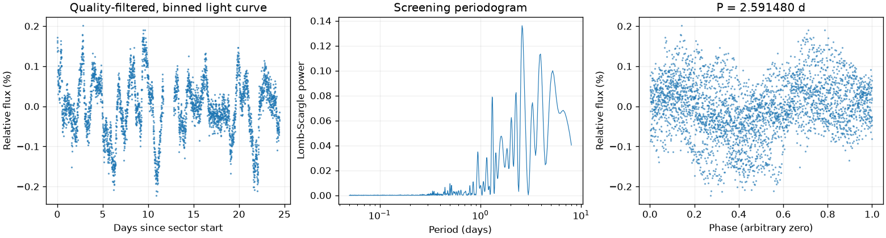
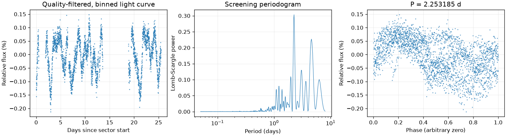

Sector 18 · 7.371162 天
相对幅度估计 0.2025% · 有效点数 14764

Screening peak only; no correlated-noise false-alarm calibration or physical classification.
这是筛选报告，未确认新发现，也不能代替 VSX 提交材料。
图中依次为亮度随时间变化、候选周期强度和折叠后的重复形状。相位零点仅供展示；纵轴是相对通量，不是标定星等。
相对幅度估计 0.2025% · 有效点数 14764

Screening peak only; no correlated-noise false-alarm calibration or physical classification.
相对幅度估计 0.0891% · 有效点数 16748

Screening peak only; no correlated-noise false-alarm calibration or physical classification.
相对幅度估计 0.1105% · 有效点数 12923

Screening peak only; no correlated-noise false-alarm calibration or physical classification.
{
"ra_deg": 28.7275020707939,
"dec_deg": 62.0873189748742,
"catalog_queries": [
{
"source": "VSX",
"status": "historical_snapshot",
"checked_at": "2026-11-09",
"note": "Archived neighborhood query only; identity and novelty not fully reviewed."
}
],
"vsx_neighbors": [
{
"Name": "Gaia DR3 508721597568674432",
"RA2000": "28.64689",
"Declination2000": "62.07885",
"ProperMotionRA": "-0.9030",
"ProperMotionDec": "-0.4220",
"VariabilityType": "DSCT|GDOR|SXPHE",
"MaxMag": "14.20 G",
"MinMag": "14.23 G",
"SpectralType": "B",
"Discoverer": "Gaia collaboration",
"Category": "Variable",
"OID": "2758999",
"Constellation": "Cas",
"sep_arcsec": 139.24921432255502
},
{
"Name": "Gaia DR3 508720910374464768",
"RA2000": "28.72355",
"Declination2000": "62.07618",
"VariabilityType": "S",
"MaxMag": "16.87 G",
"MinMag": "17.86 G",
"SpectralType": "F",
"Discoverer": "Gaia collaboration",
"Category": "Variable",
"OID": "8293094",
"Constellation": "Cas",
"sep_arcsec": 40.64984388914749
},
{
"Name": "Gaia DR3 508727679242488320",
"RA2000": "28.72602",
"Declination2000": "62.12043",
"ProperMotionRA": "2.8010",
"ProperMotionDec": "3.8710",
"VariabilityType": "ROT",
"Period": "5.7692",
"MaxMag": "16.69 G",
"MinMag": "16.82 G",
"SpectralType": "K",
"Discoverer": "Gaia collaboration",
"Category": "Variable",
"OID": "2759543",
"Constellation": "Cas",
"sep_arcsec": 119.22582653686537
}
],
"notes": [],
"errors": [],
"repeatability": {
"status": "inconsistent",
"fractional_spread": 1.9749241523653782,
"tolerance": 0.05,
"note": "Heuristic screening comparison, not period-error or long-term phase-coherence validation."
},
"localization": null,
"submission": {
"name": null,
"ra_deg": null,
"dec_deg": null,
"coordinate_source": null,
"coordinate_epoch": null,
"variability_type": null,
"period_days": null,
"period_error_days": null,
"epoch": null,
"epoch_time_standard": null,
"epoch_event": null,
"max_magnitude": null,
"min_magnitude": null,
"passband": null,
"magnitude_source": null,
"mean_magnitude": null,
"amplitude_magnitude": null,
"amplitude_passband": null,
"discoverers": null,
"references": null
}
}